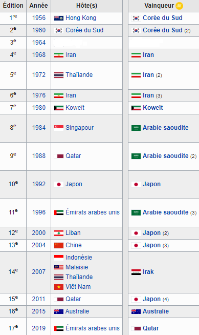

كأس أمم آسيا

كأس الأمم الآسيوية ، التي يتم اختصارها أحيانًا باسم CAN (لتمييزها عن كأس الأمم الأفريقية التي تستخدم نفس الاختصار) ، هي مسابقة كرة قدم بين أفضل الفرق الوطنية من الدول الآسيوية. يصبح الفائز بطل آسيا ويمثل عادة ممثل الاتحاد الآسيوي في كأس القارات التي ينظمها FIFA.
تاريخ
تم تنظيم كأس الأمم الآسيوية من قبل الاتحاد الآسيوي لكرة القدم منذ عام 1956. في عام 2004 ، قرر الاتحاد الآسيوي تأجيل تنظيم الدورة الرابعة عشر للحدث لمدة عام لتجنب الاجتماع الرئيسي كرة القدم الآسيوية ليست في منافسة إعلامية مع الألعاب الأولمبية الصيفية والبطولة الأوروبية لكرة القدم ، التي نظمت خلال عام 2008. وهكذا ، تم تنظيم كأس الأمم الآسيوية في عام 2008 في إندونيسيا ، ماليزيا. وهكذا ، تقدمت تايلاند وفيتنام لمدة عام واحد في عام 2007 ، في عام رياضي فقير إلى حد ما في الأحداث الرياضية العالمية. ومع ذلك ، يستمر الاختبار كل أربع سنوات ولكن في السنوات الفردية. اليابان والمملكة العربية السعودية وإيران وكوريا الجنوبية هي الدول التي تألقت أكثر في الإصدارات الخمسة عشر الأولى من هذا الحدث. جرت النسخة السادسة عشرة في أستراليا في الفترة من 9 إلى 31 يناير 2015 وشهدت فوز البلد المضيف في المباراة النهائية ضد كوريا الجنوبية (2-1 بعد الوقت الإضافي). شاركت أستراليا ، بطلة أوقيانوسيا بالفعل ، في كأس الأمم الآسيوية منذ عام 2007 بعد انضمامها إلى الاتحاد الآسيوي لكرة القدم في 1 يناير 2006. النسخة 17 من كأس آسيا أقيمت الأمم في الإمارات العربية المتحدة في الفترة من 5 يناير إلى 1 فبراير 2019 ، وهي النسخة الأولى التي تضم 24 فريقًا في مرحلتها النهائية وترى فوز قطر في المباراة النهائية ضد اليابان (3-1). قطر - وهي أول تتويج قاري - تفوز أيضًا بإحصاءات رائعة (7 انتصارات في 7 مباريات و 19 هدفاً مقابل هدف واحد).
